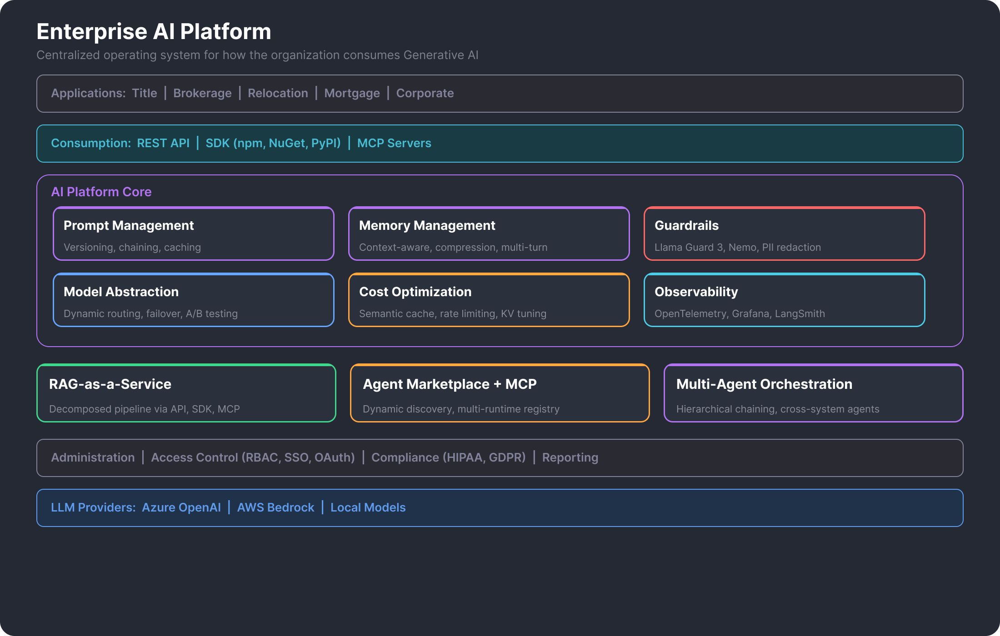

Overview
Owned the technical strategy and architecture for an enterprise AI platform — the centralized operating system for how the entire organization consumes Generative AI. Replaced fragmented vendor integrations across 5 business units with a unified, governed platform. Every LLM call across the enterprise flows through this platform — from simple completions to multi-agent workflows.
The core design principle is configuration over code: teams change AI behavior — models, prompts, safety settings, RAG parameters, tool connections — through a self-service portal without redeploying their applications. This is what makes it a platform, not just an API wrapper.
Key Highlights
- Configuration Over Code — Prompts, models, safety, RAG, workflows — all portal-managed. 25+ apps change AI behavior without redeploying.
- Agent Framework — Self-contained execution units bundling LLM, tools, safety, and instructions. Invoke with a single ID. Typed JSON Schema contracts for agent chaining.
- Universal Tool Catalog — 4 tool types (RAG, MCP, OpenAPI, Agent) in one registry. Agents compose tools regardless of type. Registration is the governance gate.
- Agent-to-Agent Composition — Agents registered as tools in the catalog. Recursive invocation to arbitrary depth — anticipating Google's A2A protocol.
- RAG-as-a-Service — Fully managed pipeline with LLM-driven retrieval, self-reflection agent, and fallback handling.
- MCP-First Integration — Early adoption before it became industry standard. Custom Okta adapter for authorization across runtimes.
- Safety as Architectural Invariant — Every request MUST reference a Safety Setting. Dual-provider defense-in-depth. Fair housing compliance baked in.
- Workflow Orchestration — Multi-agent DAG with triggers, conditional branching, and step-level traceability.
- Ceiling-Based Prompt Versioning — Clients request max version, platform resolves latest at or below. Publish without redeployment. Instant rollback.
- Observability & Cost Control — OpenTelemetry backbone, semantic caching, experiments playground, per-model cost tracking with predictive alerts.
Impact
Platform Architecture

Core Capabilities
Agent Framework
The primary execution model. An Agent bundles an LLM, system instructions, tools, safety settings, and temperature into one deployable configuration. Consumers invoke with a single agentId — the LLM autonomously decides which tools to call based on the query. The Response Format feature converts JSON Schema to system prompt instructions at runtime, creating typed data contracts for reliable agent-to-agent chaining.
Universal Tool Catalog
The most consequential architectural decision. A single registry holding 4 tool types — RAG, MCP Server, OpenAPI, and Agent — discoverable and attachable through one configuration surface. Agents consume tools regardless of type. New tool types can be added without changing how agents work. Registration in the portal is the governance gate.
- MCP Servers — custom TypeScript servers bundled as hermetic single-file deployments, plus remote servers with API key auth
- OpenAPI Tools — upload a spec, configure base URL and headers, LLM calls endpoints autonomously. No server code needed.
- Agent-to-Agent — agents registered as tools. Any agent can invoke any other agent — recursive composition to arbitrary depth.
RAG-as-a-Service
Fully managed pipeline: upload → chunk (configurable strategy/size/overlap) → embed → vector store → query-time retrieval → LLM response. The key difference: LLM-driven retrieval means the model decides when to search based on the query, not every prompt. Two-tier filtering: static defaults plus runtime tags and metadata. Self-reflection agent auto-rewrites if quality is low. Fallback handler triggers web search or alternate paths on failure.
Workflow Orchestration
Multi-agent DAG (directed acyclic graph) with 4 step types: Trigger (manual API or scheduled), Agent (invoke any registered agent), Filter (conditional branching via JSON path evaluation), and Notification (email delivery). Filter steps enable fan-out with predicate guards. Full step-level input/output traceability.
Model Routing & AI Gateway
Every LLM call across the enterprise flows through the platform. Multi-provider abstraction (AWS Bedrock + Azure OpenAI) means model swapping is a config change, not a code change. Dynamic routing based on task, cost, and performance. High-availability failover. A/B testing for controlled model rollouts.
Prompt Management
Versioned prompt settings with ceiling-based semver resolution: clients request a max version, the platform resolves the latest at or below. Prompt engineers publish without client redeployment. Instant rollback. Template variables for runtime data, RAG content, and platform-injected context.
Safety & Compliance
An architectural invariant, not a developer option. Every API request MUST reference a Safety Setting — there is no unguarded path. Dual-provider defense-in-depth: AWS Guardrails (policy-based) + Azure AI Content Safety (ML-based). Bidirectional filtering on both inputs and outputs. Fair housing regulation compliance baked into the default system prompt — a legal requirement in real estate.
Streaming & Real-Time
SSE-based streaming with 5 event types: chunk, tool_request, tool_response, complete, error. The full tool-use lifecycle is visible in real time — consumers can show users what the agent is doing as it works.
Cost Optimization
- Semantic Caching — caches frequently queried responses to reduce API calls and latency
- Dynamic KV Cache Tuning — identifies tokenizer per model, adjusts chunk size/overlap/strategy, tunes retrieval parameters automatically
- Intelligent Rate Limiting — scales down non-critical requests to prevent excessive token burn
- Experiments Playground — side-by-side comparison of up to 4 models with actual token usage and cost after execution
Observability
- OpenTelemetry Backbone — end-to-end across all agent runtimes regardless of tech stack
- Prometheus/Grafana for metrics, Loki for logs, LangSmith/LangFuse for AI-specific evaluation
- Token & Cost Monitoring — per-model, per-department consumption tracking with predictive cost alerts
Award-Winning Products Built on This Platform
The platform powers AI capabilities across the organization. Notable products that consume the platform include Listing Concierge (AI-powered property marketing — Inman Innovation Award), Agent Insights (recruitment analytics with autonomous research agents — Brokerage Niche Award), OFAC Analytics (compliance with agent-based matching), Title Core (workflow automations and multimodal apps), and Lead Scoring Engine (predictive lead quality scoring).
Technology Stack
Languages
Python, C#, Java
AI Frameworks
LangChain, LangGraph, Semantic Kernel, AutoGen, LlamaIndex
LLM Providers
Azure OpenAI, AWS Bedrock, Local Models
Infrastructure
Docker, Kubernetes, Apigee API Gateway
Data & Storage
MongoDB, Cosmos DB, SQL Server, Redis, Pinecone, ChromaDB, Neo4J
Observability
OpenTelemetry, Prometheus, Grafana, Loki, LangSmith, LangFuse
Protocols
MCP, REST, gRPC, OAuth2
Guardrails
Llama Guard 3 Vision, Nemo Guardrails
My Role
- Architecture & Strategy — designed and architected the system from the ground up, built the team over time
- Hands-on Development — developed core components across prompting, memory, RAG, agents, marketplace, MCP, observability, cost optimization, and administration
- Research & Innovation — performed research and POCs to incorporate new capabilities (MCP, browsing agents, multi-agent orchestration)
- Cross-Team Adoption — engaged with teams across business units to design and build AI systems on the platform, guiding them toward composable, interface-driven designs
- Platform Evangelism — drove adoption through events, articles, hackathons, and targeted PoCs that demonstrated tangible value